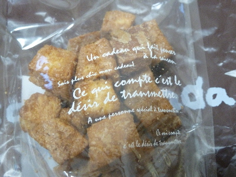
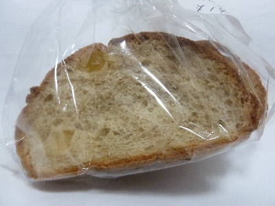
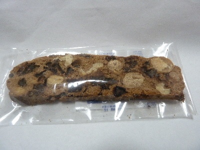
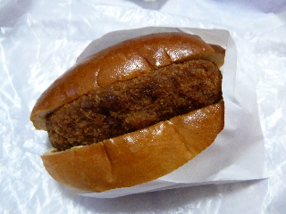
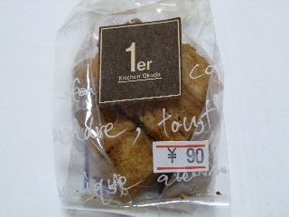
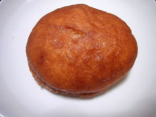
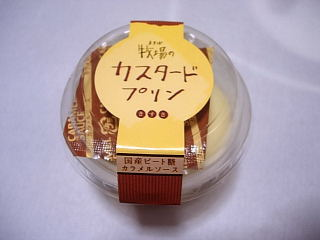

おかだのラスクはお洒落だね。
2018/05/25
小さくて可愛いラスクですね。

これくらい小さいと食べるときにお菓子クズが落ちなくていいですね。
美味しいのであっという間になくなりました。
島根県松江市末次町23
2018/05/25
小さくて可愛いラスクですね。

これくらい小さいと食べるときにお菓子クズが落ちなくていいですね。
美味しいのであっという間になくなりました。
2018/05/18
おかだの西川津店で名前がおしゃれなパンを買いました。
ローズマリーの花を見るのはいいですが、あんまり好きじゃないので香を嗅ごうとか食べようとか思わないです。
パンの材料にも使えるんですね。

ローズマリーは食べなれていないのでちょっと抵抗がありましたが、甘いリンゴ味があるので食べやすかったです。
自分では作れない味だなー。こうゆう難しい味の商品はお店で買って食べようって思いました。
2018/04/21
お店で何を買おうか迷いました。
なんとなく、同じ値段ならパン買うより洋菓子買った方がお得なんじゃない？って思ってしまいビスコッティを買いました。

封を開けた瞬間、シナモンもいい匂いがしました。
カリカリで、しっかりした歯ごたえのビスコッティです。
味は、シナモンと木の実の味がするんですが、チョコレート味が一番強かったかな。
他にも焼き菓子が販売していたので、今度は他のも買ってみたいと思いました。
2013/03/26
ミートショップきたがきさんとのコラボ商品だそうで

「きたがき」さんの昔懐かしい感じのコロッケを前面に出した感じのパンですね。
コッペパンに、コロッケとソースとマヨネーズの味がする素朴な感じの商品でした。
きっと松江の人は、昔からあって馴染みがあるコロッケなのでさらに美味しく感じるんでしょうね。
2011/08/22
小さいキューブ型のラスクです。
パッケージがなんかお洒落ですね。

小さいので食べ過ぎなくていいかも？
ラスクには砂糖が沢山しみてて、固くて甘くて美味しかったです。
いいお菓子ですね。
2008/04/26
シナモンパウダーが沢山かかったドーナッツです。
買ってすぐに食べずに、半日くらい袋に入れてたので湿気でべとべとになってしまいました。 今度買うときは気をつけようって思いました。

シナモンが沢山かかっているだけあって、シナモン味が強かったです。ドーナッツの中に入っているカスタードクリームが、ちょっとシナモンの味をマイルドにしてて、ふんわりと甘いドーナッツでした。
2008/04/26
パン屋さんでケーキやプリンを販売している所って多くあるので、きっとこのプリンもおかだ製だと思って買ったんですが、木次乳業製のプリンでした。
ちゃんと見て買わないと駄目ですね。

木次乳業だからなのか？カスタード味は弱めで、ミルクの味を生かした、なめらかで軽いプリンでした。
2007/03/10
パン屋のケーキなので、ふっくらしたパン風のケーキかと思ったんですが、ずっしり固めのパウンドケーキでした。
古風な感じのケーキだったのでちょっと意外だなーって思いました。
味もそんなに甘くなく、シンプルな味わいでした。
2006/08/13
パンの上にゴマがかかっているので、見た感じあんぱんみたいです。あんぱんの餡の代わりにヨーグルトのクリームが入っていました。
このヨーグルトクリームが濃いクリームで、パンとの相性がとっても良くておいしかったです。こんな濃いヨーグルトクリームはなかなかないですね。
お店の商品に付いてるネームプレートにNo1って書いてあったんですが、納得な商品でした。
2006/08/12
ほうれん草のみるくパンとトマトのみるくパンを食べました。
このパンは、パンの中に具が入っているんじゃなくて、パン生地に入っているので、それぞれ奇麗な緑色と朱色をしていてとっても目立ちました。
パンはふっくらしていて、アンまんや肉まんの側の感じがするなーって思いました。そこにほうれん草の緑っぽい味や、トマトのちょっと酸味のある味が入るので、健康的で爽やかな感じでした。